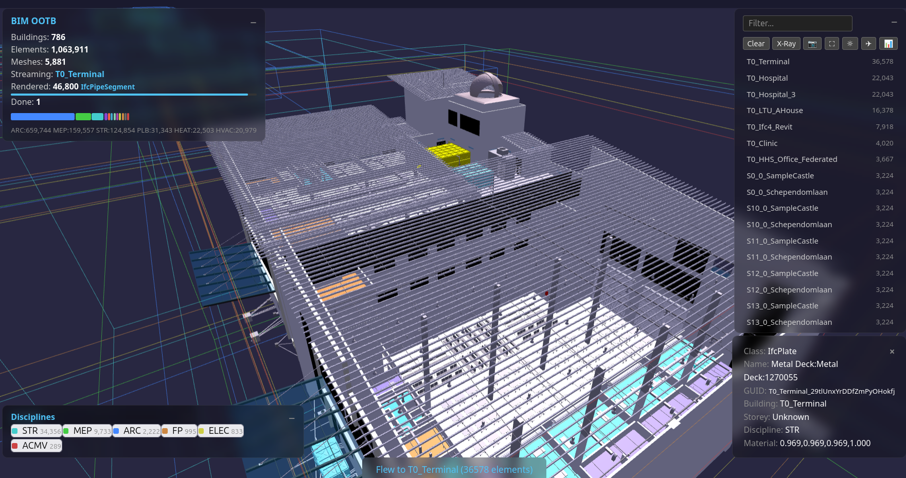
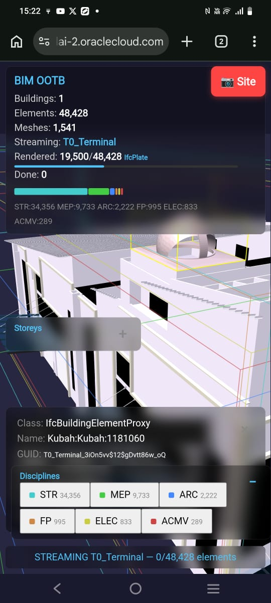
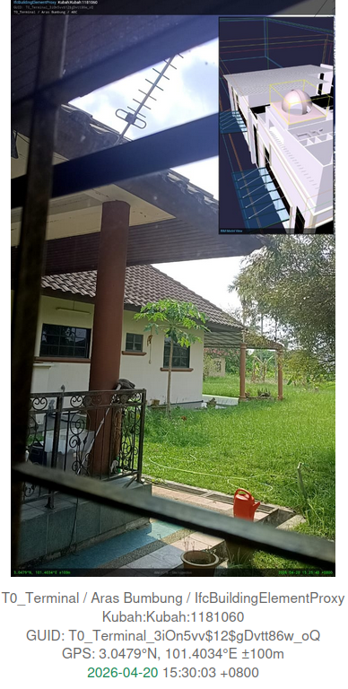
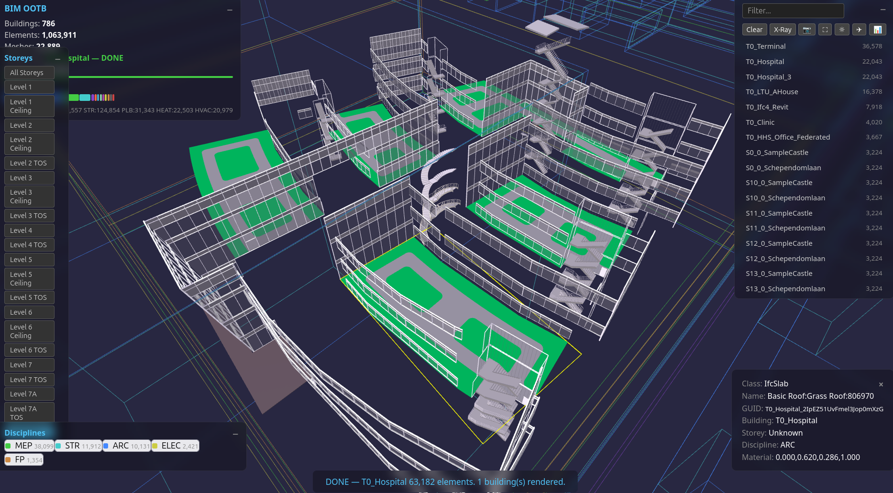
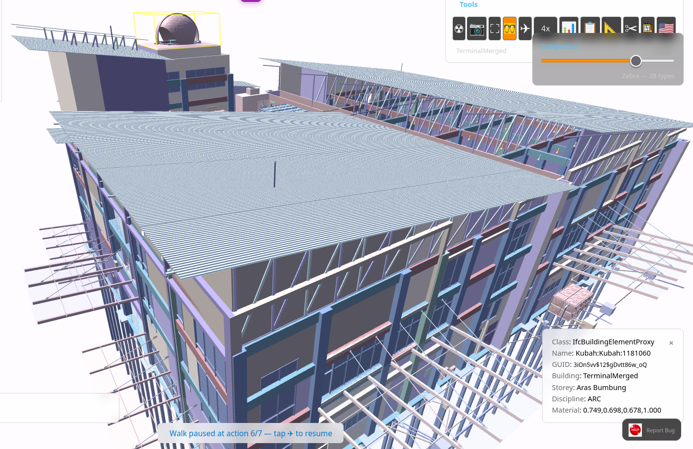
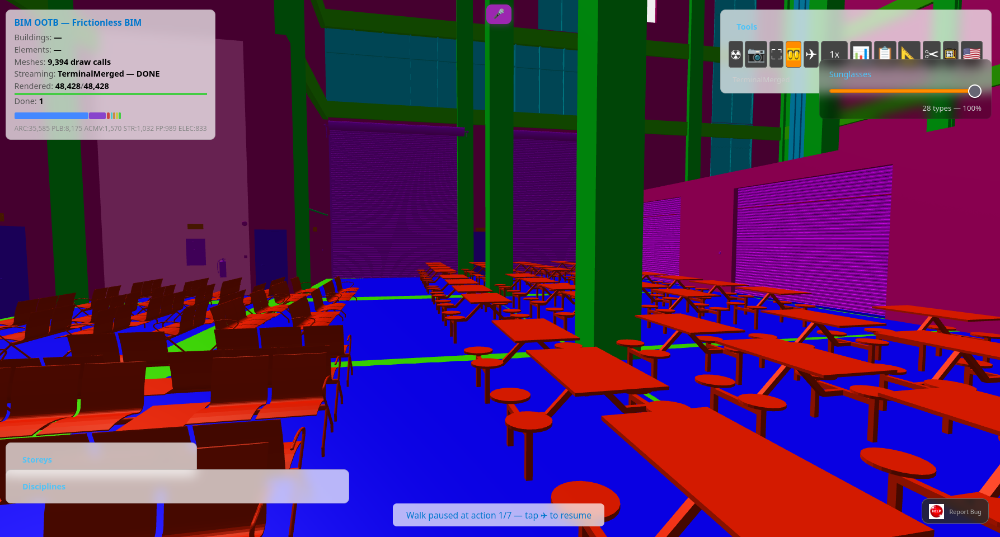
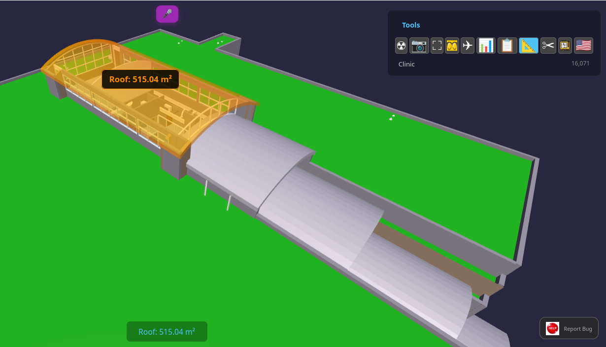
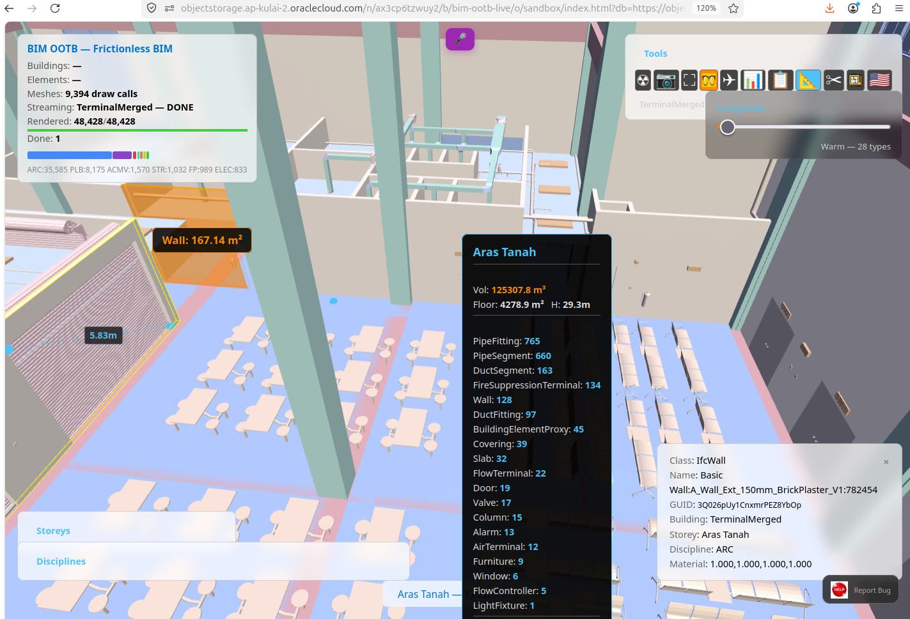

BIM Designer — Browser Edition¶
Foundation: BIM_Designer.md · RTreeGuide.md · MANIFESTO.md · 4D5DAnalysis.md · Clash Detection
Version: 0.3 (2026-04-26)
Status: LIVE — browser BIM Designer with multi-format import, IFC export, guided wizard
Depends on: deploy/dev/index.html + JS modules, per-building DBs in deploy/buildings/

1. What Changed — The S200 Proof¶
S200 proved that a single HTML file + two static DBs + sql.js (WASM SQLite) renders IFC buildings in the browser with: - Correct rotation, transparency, original IFC material colours - Streaming from BLOB geometry (no intermediate format) - 126K elements (LTU AHouse) renders to completion - X-Ray mode (Alt+Z), trackpad orbit/pan, flat shading - No server, no API, no backend
This breaks the client bottleneck. Every Bonsai feature that reads from the DB (not Blender-specific) can be replicated in the browser. The DB schema IS the API. See SQLite3D_Schema.md for the full specification.
1.0 The Technology Stack — WebAssembly (WASM)¶
The enabling technology is WebAssembly (WASM) — a binary instruction format that runs native-speed code inside the browser sandbox. What matters for us:
sql.js compiles the entire SQLite C library (~250K lines) to WASM. The browser
downloads a ~1MB .wasm file (vendored locally in lib/, CDN fallback), and from that point it has a full SQL
engine running locally — the same SQLite that powers every smartphone on earth.
When we call db.exec("SELECT vertices FROM component_geometries WHERE ..."),
that query runs inside the browser tab at near-native speed. No server round-trip.
Three.js is the 3D rendering library. It wraps WebGL (the browser's GPU API)
and gives us BufferGeometry — the ability to hand raw vertex/face arrays to the
GPU. When we unpack a BLOB from SQLite into a Float32Array, Three.js renders it
in microseconds. The GPU doesn't care where the data came from.
The pipeline in the browser:
sql.js (WASM) Three.js (WebGL/GPU)
│ │
│ SELECT vertices, faces │
│ FROM component_geometries │
│ WHERE geometry_hash = ? │
▼ │
Uint8Array (BLOB) │
│ │
│ new Float32Array(blob) │
│ swap axes: IFC→Three.js │
▼ │
Float32Array (positions) ─────────▶ BufferGeometry
│
▼
GPU renders mesh
No intermediate file format. No glTF. No OBJ. No server-side conversion. The BLOB in the DB IS the mesh. The browser IS the renderer.
1.1 What Changed — Honest Assessment¶
Individual components existed before. What's new is the combination at scale and the elimination of server-side infrastructure.
| Component | Prior Art | What We Added |
|---|---|---|
| sql.js WASM | Existed since 2016. Could load large DBs if browser had RAM. | Per-building DB split + IndexedDB caching. Each building downloads in 1-2s, cached for instant revisit. No server needed. |
| Three.js BufferGeometry | Mature since 2015. Every web viewer uses it. | Nothing — we use it as-is. |
| DB-as-model | IFC.js (2020) parses IFC in WASM. Speckle (2019) serves objects via API. | Different architecture: we store pre-tessellated BLOBs in SQLite alongside metadata. No re-parsing, no API server. The browser queries the same DB for both geometry and properties. IFC.js re-parses geometry each time. Speckle requires a server. |
| Browser BLOB streaming | glTF/OBJ loading in browsers since 2015. IFC.js streams parsed geometry. | Streaming from SQLite BLOBs (not file formats) means geometry and metadata share one query layer. No export/import step — the BLOB is a column, not a file. |
| nD analytics (4D-8D) | SQL queries on element attributes — the operations themselves are standard relational algebra. | The novelty is the template-driven engine + single-DB pipeline: 5 dimensions from one _extracted.db, user-editable JSON templates, self-healing dependency chain, 8.7s at 1M elements. Commercial tools charge $60-180K/yr and silo each dimension behind separate vendors. |
What's genuinely new: the full pipeline — IFC → extracted DB → pre-tessellated BLOBs → browser renders geometry AND runs analytics from the same SQL layer, with zero server infrastructure. The components existed. The integration at 126K elements with 60fps did not.
| GPU instancing (S231) | THREE.InstancedMesh since r125 (2022). Standard pattern. | Grouped by geometry_hash — 85% draw call reduction on Terminal (48K el). Material dedup to ~100 shared instances. |
| Mobile merge (S232) | BufferGeometry merge is textbook Three.js optimization. | Storey×disc×rgba grouping, transform baked into vertices — 95% reduction on mobile (Clinic 16K → 729 draws). InstancedMesh filter via zero-scale matrix. Per-instance pick via hit.instanceId. |
2. Deployment Architecture¶
2.1 Static File Deployment (OCI / Any CDN)¶
┌──────────────────────────────────────────┐
│ OCI Object Storage (public bucket) │
│ │
│ index.html (landing page) │
│ rtree_browser_demo.html (viewer) │
│ manifest.json (building catalogue) │
│ buildings/ │
│ city_index.db (324KB — 786 bboxes) │
│ SampleHouse_extracted.db (0.1MB) │
│ SampleHouse_library.db (0.4MB) │
│ Hospital_extracted.db (28MB) │
│ Hospital_library.db (59MB) │
│ ... 30 archetypes × 2 DBs each │
└──────────────┬───────────────────────────┘
│ fetch() per building (1-2s)
▼
┌──────────────────────────────────────────┐
│ Browser (any modern browser) │
│ │
│ sql.js (WASM) ← CDN │
│ Three.js ← CDN │
│ OrbitControls ← CDN │
│ │
│ IndexedDB cache (bim_ootb_cache) │
│ → first visit: download + cache │
│ → repeat visit: instant from cache │
│ │
│ DB in WASM → SQL queries → BLOBs │
│ → BufferGeometry → GPU render │
└──────────────────────────────────────────┘
No server. No API. No Docker. No backend. Just files.
2.2 Loading: Per-Building Direct Download + Cache¶
Each building is a separate DB pair ({name}_extracted.db + {name}_library.db).
Browser downloads the pair via fetch(), loads into sql.js (in-memory SQLite), renders with Three.js.
IndexedDB cache (bim_ootb_cache) stores downloads — second visit is instant (no network).
httpvfs (HTTP Range requests) was tried and retired. Each SQLite page fetch = 130ms network round-trip. A single query on a 579MB DB needs 50-100 page fetches = 6-13 seconds of stalling. Direct download of per-building DBs (1-60MB each) completes in 1-2 seconds. See S203 prompt for details.
2.3 Per-Building DB Sizes¶
| Building | Elements | Unique Meshes | Download (ext+lib) |
|---|---|---|---|
| SampleHouse | 65 | 51 | 0.5 MB |
| Duplex | 1,169 | 650 | 2.8 MB |
| HITOS | 2,593 | 1,706 | 5.9 MB |
| Clinic | 16,480 | 7,654 | 31 MB |
| Terminal | 48,428 | 7,150 | 59 MB |
| Hospital | 63,917 | 23,045 | 88 MB |
| LTU AHouse | 125,698 | 51,392 | 177 MB |
All 30 archetypes extracted. Extraction script: scripts/extract_per_building.py.
3. Feature Roadmap — What Goes In¶
Phase 1: Viewer + Inspector (S200 — DONE)¶
- [x] Building bbox wireframes (city overview)
- [x] Click building → stream geometry from BLOBs
- [x] Per-element rotation (Euler XYZ)
- [x] Material transparency (alpha from material_rgba)
- [x] IFC material colours (discipline fallback for NULL)
- [x] Flat shading (crisp BIM edges)
- [x] Building list panel (clickable cards, sorted by size, filter input)
- [x] Fly-to building
- [x] HUD: building name, streaming progress bar, element flicker
- [x] Trackpad + mouse orbit/pan/zoom (Shift+drag = pan)
- [x] Collapsible panels (−/+ toggle)
- [x] Element picker (click → class, name, GUID, storey, discipline, material)
- [x] Yellow bbox highlight on selected element
- [x] Hover highlight (emissive glow + pointer cursor)
- [x] Discipline toggle (show/hide per discipline, strikethrough when OFF)
- [x] Storey filter (isolate floors, works with discipline filter)
- [x] X-Ray mode (Alt+Z, 15% opacity)
- [x] Fly-around rendered buildings (orbit + auto-transition between buildings)
- [x] Screenshot (camera icon, white flash, downloads PNG)
- [x] Fullscreen (icon + F11)
- [x] Light/dark theme (white background, bboxes hidden for print)
- [x] URL deep-link (hash encodes building + camera position)
- [x] Stream pause/resume (switch buildings, resume where left off)
- [x] Unrestricted orbit (full 360° top-to-bottom)
Phase 2: Next¶
- [ ] Property panel — selected element's full attribute set from DB
- [ ] Multi-building streaming — stream nearest on camera move, shred distant
Phase 2b: IFC Import + Variation Order (S220/S222 — DONE)¶
Drop an IFC file. Get a costed Variation Order Excel. Zero install.
- [x] IFC import — drag-drop IFC2x3/IFC4/IFC4x3 → web-ifc WASM parse → sql.js DBs → IndexedDB
- [x] Shared DB builder —
import_db_builder.js, single source of truth for import schema - [x] Auto-save — DBs auto-download after import (no Save button click)
- [x] Variation detection — re-import same building → auto-detect version (v2, v3 badge on card)
- [x] GUID-based diff — compare two imports: ADDED (green), REMOVED (red ghost), CHANGED (yellow)
- [x] Diff overlay — colour-coded elements in 3D viewer with live cost preview panel
- [x] Variation Order Excel — 3-sheet export:
- Configuration — editable cost factors, set once per project
- Detail — every affected element: IFC class, unit rate, cost factor, direct cost, total impact (with O&P), schedule days, 4D phase
- Executive Summary — scope count, 5D cost breakdown (add/remove/change), 4D schedule impact per phase, EVM formula reference
- [x] Cost model — industry-standard formulas:
- FIDIC Clause 12 valuation: Direct Cost + Overhead + Profit
- AACE change order costing: ADD=1.0×, REMOVE=0.3× (demo+disposal), CHANGE=1.3× (remove+reinstall+disruption)
- PMI Earned Value: CV, SV, CPI, SPI reference formulas
- Total Impact = Direct × (1 + 10% Overhead + 15% Markup) × (1 + 5% Disruption)
- [x] Rates — CIDB Malaysia 2024 (material, labour, equipment), USD conversion, configurable per project
- [x] 4D schedule impact — elements/day productivity from
templates/4D_phases.json, phase grouping - [x] Test harness —
s220_test.js: 58 PASS / 0 FAIL (schema, transforms, BLOBs, envelope, integrity)
Templates (editable — set once per project):
| Template | File | What to Edit |
|---|---|---|
| 5D Material Rates | templates/5D_rates.json |
Unit rates per IFC class, labour rates, equipment |
| 4D Construction Phases | templates/4D_phases.json |
Phase sequence, productivity, predecessors |
| VO Cost Factors | variation_order.js §VO_CONFIG |
Add/remove/change multipliers, overhead%, markup% |
| nD Master Formulas | templates/nD_formulas.json |
Measurement rules, cost/schedule/carbon formulas |
How it works — the change management cycle:
- Drop IFC file on landing page → auto-parsed, auto-saved as v0 (baseline)
- Architect issues a revised IFC → drop it, select "Merge" → stored as v1
- Open → viewer loads v0 (baseline), computes GUID-based diff against v1:
- ADDED (green) — new GUIDs in v1, streamed from v1's geometry
- REMOVED (red ghost, 50% opacity) — GUIDs in v0 absent from v1
- CHANGED (yellow) — same GUID, different properties (name, material, storey)
- Diff panel shows count + 5D cost preview (live in viewer)
- Click 4D/5D → variance chart (element count + cost impact) + text summary
- Save 5D = acceptance — Excel includes VO Detail + VO Summary sheets
- Next revision → import v2, diff against v1. Repeat.
Diff detection — merge vs revision: - Revision (GUID overlap >= 10%): same building, modified. Full diff: added/removed/changed. - Merge (overlap < 10%): distinct buildings combined. Added elements shown, base untouched — no false "removed" flags.
Diff chain (internal):
landing openProject() → caches v0 as ?db=, v1 as ?diffdb=
→ §OPEN_DIFF
viewer main.js → loads diffDb from ?diffdb= param
→ §DIFF_DB_LOADED → diff.js computeDiff() → §DIFF
→ applyDiffOverlay() colours base meshes + streams added from diffDb
→ §DIFF_OVERLAY → showDiffSummary() → §DIFF_SUMMARY
4D/5D boq_charts.html → loads both DBs, computes same GUID diff
→ §BOQ_DIFF → variance chart rendered
→ Save 5D: VO Detail + VO Summary sheets appended → §VO_IN_5D
Rate templates (editable — set once per project):
| Template | Path | What to Edit |
|---|---|---|
| All Rates + Labels | deploy/dev/rates.js |
Single source: material rates, labour, equipment, sequences, colours |
| Locale / Rate Book | deploy/dev/locales/{code}.js |
Full locale: currency + rates + labels + attribution. 15 countries shipped. See Localization Guide |
| VO Cost Factors | deploy/dev/variation_order.js §VO_CONFIG |
Add=1.0×, Remove=0.3×, Change=1.3×, overhead 10%, markup 15%, disruption 5% |
Localization (S226): iDempiere-style _TRL locale system. Every label, currency symbol, rate source, column header, chart title, and Excel sheet name is locale-driven. 15 country locales shipped — each with local rate books (CIDB, RS Means, DIN 276, Spon's, etc.). Project-level override: copy a locale file, edit rates for your contract. ?lang=ms_MY in the URL switches the entire 4D/5D output to Bahasa Melayu with CIDB RM rates. See Localization.md for the full developer guide.
Basic 4D/5D scheduling and costing runs in the browser with zero licensing cost — how far this takes you compared to dedicated tools like Primavera P6 depends on your project needs.
Enterprise setup: The browser import creates a single self-contained DB per building (metadata + geometry, instanced and deduped). For organisations needing a centralised component library shared across projects — where one curated
library.dbserves multiple buildings with consistent geometry and materials — contact the creator at red1org@gmail.com for consultation on shared library architecture and deployment.
Phase 2c: Drop Zone Multi-Format + Wizard + IFC Export (S228/S229 — DONE)¶
Any 3D file becomes a BIM model. Zero IFC knowledge required.
- [x] Drop Zone multi-format — OBJ, STL, DAE (ColladaLoader), GLB/GLTF (GLTFLoader), FBX (FBXLoader+fflate), 3DS (TDSLoader). Auto-detect up-axis (Y-up vs Z-up) + auto-scale (mm→m)
- [x] Mesh import worker —
mesh_import_worker.js: format router, scene graph traversal, material extraction, triangle mesh → BLOB pipeline - [x] Semantic enrichment —
semantic_enrichment.js+scene_to_db.js: classify meshes into IFC types, assign storeys, disciplines, materials - [x] Guided classification wizard —
wizard.js: 6-step amber panel flow. Non-IFC users classify imported meshes into BIM categories (IfcWall, IfcDoor, etc.) - [x] IFC export —
ifc_export_worker.js: DB → .ifc download. Pure STEP text builder (no web-ifc dependency). Export triangle on import cards, flyout chooser (IFC/SQLite). Round-trip: import OBJ → classify → export IFC - [x] IFC export test —
test/test_ifc_export.html: 30 PASS - [x] Playwright E2E — 72/72 desktop, 10 spec files covering all features
SRS: internal/DROP_ZONE_MULTI_FORMAT_SRS.md
Phase 2d: PWA Offline + Install (S243 — DONE)¶
Load once, use forever. No internet required after first visit.
- [x] Service Worker —
sw.jsv243 precaches all 40+ JS/HTML/CDN assets on first visit. Network-first for JS/HTML (always fresh on deploy), cache-first for CDN libs (.wasm, Three.js, sql.js) - [x] IndexedDB caching — building DBs cached automatically on first view via
A.cachedFetch(). Second visit = instant, zero network. DB files bypass Service Worker entirely - [x] PWA manifest —
manifest.webmanifestenables "Add to Home Screen" on mobile and "Install App" on desktop Chrome. Standalone mode (no browser chrome) - [x] Offline fallback —
offline.htmlshown gracefully when a resource isn't cached and network is down. Guides user to open previously viewed buildings - [x] All entry points wired —
index.html,boq_charts.html,2d.htmlall register SW + link manifest - [x] App icons — 192×192 and 512×512 PNG icons for home screen and app launcher
What works offline: Full 3D viewer, storey/discipline filters, element picker, NLP voice queries, X-ray, screenshot, measurement, walk mode, 2D plans — anything that doesn't need a new DB download.
What needs network: First-time DB download for a building not yet cached, CDN libraries on very first visit ever.
Spec: prompts/S243_offline_pwa.md
Phase 3: Analysis — nD Engine in the Browser¶
Query-driven overlays — same DB, richer SQL. The nD engine (4D5DAnalysis.md)
already produces 4D-8D tables from JSON templates + elements_meta. Phase 3 ports this
to JavaScript (same SQL queries, same templates, same _extracted.db via sql.js).
No server — the browser IS the analytics engine.
- [ ] nD engine (JS port) — port
scripts/nD_engine.py(~800 LOC) to browser JS Same JSON templates (templates/*.json), same SQL, same output tables. User drags custom5D_rates.jsononto page → browser re-runs 5D with local rates. Self-healing: request 6D → auto-generates 5D if missing (same as Python engine). - [ ] BOQ/Cost overlay — colour-code elements by cost band (5D)
Query:
simple_qtotable (generated by browser nD engine or pre-baked in DB) - [ ] 4D timeline — slider scrubs schedule, elements appear/disappear
Query:
construction_scheduletable → show/hide meshes bystart_date - [ ] 6D carbon heatmap — colour intensity by embodied carbon per element
Query:
carbon_audittable - [ ] 7D asset register — click element → warranty, service interval, replacement year
Query:
asset_registertable - [ ] 8D safety overlay — risk-level colour coding (LOW=green → VERY HIGH=red)
Query:
hazard_registertable - [ ] Measurement tool — pick two points, show distance
- [ ] Section plane — Three.js clipping plane, slider to cut through floors
- [ ] Excel export — SheetJS generates XLSX from SQL query results in-browser
Same BOQ/schedule/carbon/asset/safety reports as
nD_engine.py --all - [ ] Template editor — HTML form to load/validate/save JSON templates (5D rates, 6D carbon, etc.) QS edits rates in browser, re-runs 5D, downloads Excel. Zero install.
Phase 4: Composer (future — preserves BIM Designer vision)¶
This is where the original BIM Designer's building composition returns. This is the only phase that needs a backend. Phases 1-3 are 100% client-side, zero server.
- [ ] Grid editor — drag grid lines on 2D plan overlay, snap-to-grid
- [ ] Room editor — drag room bboxes within grid cells
- [ ] BOM browser — collapsible tree panel from BOM hierarchy in DB
- [ ] Product picker — query component_library for alternative products
- [ ] Route Walker config — choose MEP routing strategy, the server generates pipes/ducts
- [ ] Compile trigger — send Work Order to backend, receive compiled DB, re-render
4. Phase 4 Deep Dive — The Modeller Bridge¶
4.1 Why It's Feasible¶
The compiler is already a pure function:
Work Order (JSON) → Java compiler → output.db → browser renders
The BIM Designer spec (§11.4) already defines the wire protocol:
→ {"action":"compile","buildingId":"SampleHouse","bomDbPath":"..."}
← {"success":true,"elementCount":58,"compileTimeMs":847,"outputDbPath":"..."}
The browser just needs to: 1. Collect parameters (grid, rooms, MEP strategy) into a Work Order 2. POST it to the compiler 3. Receive the compiled DB (or a delta) 4. Re-render with the same streaming pipeline we already have
4.2 What the Browser Edits (Macro Level Only)¶
The browser is NOT a geometry modeller. It edits parameters that the compiler turns into geometry. This is the BIM BOM philosophy — the GUI is a parameter chooser that triggers compilation.
| Browser UI Control | What It Edits | Compiler Produces |
|---|---|---|
| Grid drag | C_OrderLine grid dimensions | Walls, columns at grid intersections |
| Room resize | C_OrderLine bounds (A1-B2) | Floor slabs, room boundaries |
| Room type dropdown | BOM recipe selection | Furniture, fixtures, finishes |
| Storey spinner | Number of storeys | Full floor duplication + stairs |
| Jurisdiction dropdown | AD_Val_Rule set | Compliance validation (UBBL etc.) |
| Route Walker toggle | MEP routing strategy | Pipes, ducts, cables (BIM COBOL verbs) |
| Product swap | M_Product_ID in BOM line | Different door/window/fitting |
Key insight: None of these require the browser to understand geometry. The browser sends macro parameters. The Java compiler does the spatial maths. The browser re-renders the result.
4.3 OCI Architecture for Modeller¶
┌─────────────────────────────────────────────────┐
│ Browser (same HTML + Three.js + sql.js) │
│ │
│ ┌──────────┐ ┌──────────┐ ┌──────────────┐ │
│ │ Viewer │ │ Inspector│ │ Composer │ │
│ │ (Phase 1)│ │ (Phase 2)│ │ (Phase 4) │ │
│ │ renders │ │ queries │ │ edits params │ │
│ └──────────┘ └──────────┘ └──────┬───────┘ │
│ │ POST │
└──────────────────────────────────────┼──────────┘
│
┌────────────▼───────────┐
│ OCI Container Instance │
│ (or Functions/Lambda) │
│ │
│ Java compiler (jar) │
│ - receives Work Order │
│ - compiles to output.db│
│ - returns DB or delta │
│ │
│ Cost: ~$0.01/compile │
│ Time: SH=0.8s, TE=30s │
└────────────┬────────────┘
│
┌────────────▼────────────┐
│ OCI Object Storage │
│ (static files) │
│ │
│ component_library.db │
│ compiled output DBs │
│ HTML viewer │
└─────────────────────────┘
Note: The Phase 4 server uses
component_library.dbfor compilation. The browser viewer uses single per-building{Name}_extracted.dbfiles (metadata + transforms + geometry BLOBs), notcomponent_library.db.
4.4 The Bridge — Is It a Hindrance?¶
No, and here's why:
| Concern | Answer |
|---|---|
| Latency | SH compiles in <1s. Even TE at 30s is acceptable for a "redesign" action — user edits, clicks Compile, waits, sees result. Not real-time, but responsive. |
| Cost | OCI Container Instances: ~$0.01/compile. Serverless Functions: ~$0.001/compile. No idle cost if using Functions. |
| Complexity | One JAR file, one HTTP endpoint. The existing TCP protocol (§11.4) just wraps in HTTP POST. ~50 lines of servlet code. |
| DB transfer | Compiled output.db for SH = ~2MB. Even TE = ~50MB. Download + re-render = seconds. |
| Offline? | Phases 1-3 work offline. Phase 4 needs network for compile. Acceptable — editing implies saving. |
The only real constraint: the Java compiler needs component_library.db and
BOM.db on the server side. These are already static files — deploy them alongside
the JAR. No database server, no connection pool, just SQLite files.
4.5 Edit→Compile→View Loop¶
User drags grid line → browser updates Work Order JSON (local, instant)
User clicks [Compile] → POST Work Order to OCI endpoint (~1s for SH)
Server compiles → returns output.db URL (OCI Object Storage)
Browser fetches output.db → clears scene, re-streams geometry (~2s for SH)
Total round-trip: ~3-5s for a small house
Compare this to Revit: change a wall → regenerate → wait 10-30s for the viewport to catch up. Our loop is competitive, and the user gets a full BOM + BOQ + 4D schedule with every compile — not just geometry.
4.6 What NOT to Put in the Browser Modeller¶
| Feature | Why Not | Where Instead |
|---|---|---|
| Vertex-level editing | Not a mesh editor | Bonsai / Blender |
| Custom BOM authoring | Complex tree editing | Desktop BOM editor |
| IFC import/export | Heavy parsing | Server-side extraction pipeline |
| Multi-user collaboration | Needs conflict resolution | Future phase — OT/CRDT on Work Orders |
| Undo history >1 level | Memory cost | Single undo = revert to previous Work Order |
4.7 2D Integration¶
The 2D Layout pipeline (2D_Layout/) produces floor plans from the same compiled DB.
In the browser:
- 2D overlay — render 2D plan as SVG/Canvas overlay on the 3D view
- Grid editing — user drags on 2D plan, sees 3D update after compile
- Dimension display — room dimensions from DB, rendered as 2D annotations
- Toggle — button to switch between 3D perspective and 2D plan view
The 2D→3D link is the same DB. No separate 2D file — query element_transforms
filtered by storey, project to XZ plane, draw walls as lines.
4. What NOT to Put In (Performance Guards)¶
| Feature | Why Not | Alternative |
|---|---|---|
| Real-time shadows | GPU expensive, no value for review | Ambient + hemisphere light |
| Physics / collision | Not a game engine | Visual overlap is fine for review |
| Full IFC schema editor | Scope creep | Edit in Bonsai, view in browser |
| Modifier stacks / GN | Blender-specific | Pre-tessellated BLOBs only |
| Animation / keyframes | Not a timeline tool | 4D = show/hide by schedule |
| Texture maps | Large downloads, marginal value | Flat colour from material_rgba |
| Post-processing (SSAO, bloom) | GPU budget | Clean flat rendering is sufficient |
Performance contract: 60fps orbit with up to 50K rendered meshes. Above 50K, implement shred-on-distance (same as Bonsai Direct Stream).
5. Relation to Existing Specs¶
| Spec | Role | Browser Edition Touch |
|---|---|---|
| BIM_Designer.md | Architecture vision (Blender) | Phase 4 adapts composition UX to browser |
internal/BIM_Designer_SRS.md |
50 testable requirements (archived) | Phase 2-3 implements subset (viewer + inspector) |
| RTreeGuide.md | Blender viewer user guide | Browser edition gets its own guide |
| MANIFESTO.md | DB-as-model philosophy | Browser edition IS the proof |
| 4D5DAnalysis.md | nD engine spec (4D-8D) | Phase 3 ports engine to JS — same templates, same SQL, browser-native |
5.1 Does This Replace the Blender BIM Designer?¶
No. They serve different audiences:
| Blender BIM Designer | Browser Edition | |
|---|---|---|
| Audience | BIM authors, designers | Stakeholders, reviewers, site teams |
| Capability | Full composition + compilation | View + query + analyse |
| Install | Blender + addon | Just a URL |
| Offline | Yes | Yes (after download) |
| Edit | Yes (Work Orders, BOM) | Phase 4 only |
| Backend | Java compiler | None (Phases 1-3) |
6. Quick Start¶
6.0 Live Demo — Zero Install¶
Open in any browser (desktop or mobile). See also: Mobile & Cloud Deployment for OCI setup, APK packaging, and offline strategy.
BIM OOTB — 37 buildings, 1M elements
Click any building → downloads its DB (1-60MB) → streams geometry in your browser. Cached in IndexedDB — second visit is instant. Explore all 30 archetypes to unlock the full city (786 buildings).
Works on desktop and mobile. No install, no account, no server.


Site Camera features (mobile only):
- BIM model PiP — 3D view composited into the photo (top-right), auto-rotated to match compass
- Compass-aligned model — Three.js camera rotates to match phone heading using IFC TrueNorth (
project_metadata.true_north_angle). The PiP shows the same face of the building you're physically looking at - Element metadata — IFC class, name, GUID, building, storey, discipline (top bar)
- GPS coordinates — device position with Google Maps link in share text
- Compass bearing — direction you're facing (e.g. 127° SE), stamped on photo
- Timestamp — capture time with timezone
- QR code — scannable link back to the element in the viewer
- Markup tools — draw arrows, circles, freehand, and text annotations on the photo before sharing
- Share — Web Share API (WhatsApp, email, any app) with photo + metadata + Maps link
- Undo — step back through annotations
No native app. No account. Works offline after first load.
TrueNorth alignment: The IFC file contains IfcGeometricRepresentationContext.TrueNorth — a direction vector defining the building's orientation relative to geographic north. The extraction script stores this as true_north_angle in project_metadata. When the Site Camera opens, the viewer reads the phone compass and the building's TrueNorth, then rotates the 3D camera so the model snapshot matches the physical viewing direction. This is the same capability that Trimble SiteVision sells for $10K+ with proprietary hardware — delivered here in a browser, on any phone, for free.
6.1 Local Setup (3 steps)¶
# 1. Go to deploy folder
cd deploy
# 2. Start local server (no venv, no install — built-in Python)
python3 -m http.server 8080
# 3. Open in browser
# http://localhost:8080/landing.html
Per-building DBs must be in deploy/buildings/:
- {Name}_extracted.db — building metadata + transforms
- {Name}_library.db — geometry BLOBs (vertices + faces)
6.2 Extract Your Own IFC¶
Prerequisites (all platforms):
- Python 3.10+ — python3 --version
- IfcOpenShell — pip install ifcopenshell
- Java 17+ — java --version (for DAGCompiler geometry extraction)
- Maven 3.8+ — mvn --version (build only, one-time)
Works on Linux, Mac, and Windows (native Python or WSL).
# One-command onboarding (Linux/Mac)
./scripts/onboard_ifc.sh --prefix XX --type House --name 'My Building' --ifc path/to/model.ifc
# Or step-by-step (all platforms):
# 1. Extract metadata + transforms from IFC
python3 DAGCompiler/python/extractIFCtoDB.py path/to/model.ifc deploy/buildings/MyBuilding_extracted.db
# 2. Extract geometry BLOBs to library
mvn -q compile -pl DAGCompiler
java -cp DAGCompiler/target/classes com.bim.compiler.library.ComponentLibrary \
path/to/model.ifc deploy/buildings/MyBuilding_library.db
# 3. Serve locally
cd deploy && python3 -m http.server 8080
# Open: http://localhost:8080/rtree_browser_demo.html?db=buildings/MyBuilding_extracted.db&lib=buildings/MyBuilding_library.db
Full guide: IFC Onboarding Runbook (8 steps, self-service). Platform setup: Systems Installer Guide §1-2.
6.2b All Features (Browser + Mobile)¶
Browser (desktop + mobile): - 3D orbit, pan, zoom (mouse or touch) - Click any element → IFC class, GUID, storey, discipline, material - Fly-tour — auto-orbits rendered buildings, click to stop - Indoor walk-through — follows IfcSpace/door graph through the building - Walk speed control (1x / 2x / 4x) - X-Ray mode (Alt+Z) — transparent view, see structure through walls - Measure tool — tap two points, get distance in metres - Section cut — horizontal clip plane, slider to cut through floors - Storey filter — isolate a single floor - Discipline toggle — show/hide ARC, STR, MEP, ELEC, etc. - Screenshot — saves current view as PNG - Fullscreen - Light/dark theme - Deep-link URL — camera + building state encoded in hash, shareable - 4D/5D export — element schedule + cost estimate - IndexedDB cache — download once, instant on revisit - City mode — 786 building bboxes, click to download + stream on demand
Mobile-only (touch-optimised, larger buttons): - Site Camera — opens phone camera with GPS + compass + timestamp overlay - BIM PiP (picture-in-picture) — 3D snapshot in camera corner - Markup tools — arrow, circle, freehand draw, text (on captured photo) - Colour picker for markup - Share → WhatsApp (with BIM context baked into image) - Save to gallery - GPS Walk Mode — blue dot tracks your position in the model - Anchor prompt — set GPS origin at building entrance - Compass heading → model azimuth (TrueNorth aligned) - Issue log — capture site issues with photo + GPS + classification - Export issues to Excel - Wall X-Ray — tap a wall in Walk Mode to see MEP behind it
6.3 Controls¶
| Input | Action |
|---|---|
| Drag | Orbit camera |
| Shift + Drag | Pan camera |
| Right-click drag | Pan camera |
| Scroll / Pinch | Zoom |
| Click element | Identify — shows class, name, GUID, storey, material |
| Alt+Z | X-Ray toggle |
| F11 | Fullscreen toggle |
6.4 Toolbar Buttons (top-right panel)¶
| Button | Action |
|---|---|
| Clear | Remove all streamed meshes |
| X-Ray | Toggle 15% transparency on all elements |
| 📷 | Screenshot (saves PNG to Downloads/) |
| ⛶ | Fullscreen |
| ☆ / ☾ | Light/dark theme (white bg hides bboxes for print) |
| ✈ | Fly around rendered buildings |
6.5 Panels¶
| Panel | Position | Shows |
|---|---|---|
| BIM OOTB | Top-left | Buildings, elements, streaming progress bar, element flicker |
| Tools | Top-right | Filter, buttons, building list (clickable cards) |
| Info | Bottom-right | Clicked element metadata (class, GUID, storey, disc, material) |
| Storeys | Bottom-left | Floor filter — click to isolate one storey |
| Disciplines | Bottom-left | Discipline toggle — click to show/hide ARC, STR, MEP etc. |
| Status | Bottom-centre | Current streaming state |
All panels collapse with −/+.
6.6 Workflow¶
- Open the URL → city of bounding boxes appears
- Click a building in the list (right panel) → flies to it, streams geometry
- Watch the progress bar and element flicker as it renders
- Click any element → Info panel shows IFC metadata
- Filter by storey or discipline (bottom-left panels)
- Alt+Z for X-Ray, ☆ for white background
- ✈ to fly around all rendered buildings
- 📷 for screenshot
- Switch to another building → first one pauses, click back to resume
- Share the URL (includes building + camera position in hash)
7. Action Roadmap — OCI Deployment¶
7.1 Deployment Steps¶
| Step | Action | Status |
|---|---|---|
| 1 | Create OCI Object Storage bucket (public read) | DONE |
| 2 | Upload viewer HTML (with progress loader) | DONE |
| 3 | Upload per-building DBs (14 archetypes) | DONE |
| 4 | Auto-detect OCI base URL in HTML | DONE |
| 5 | Landing page with manifest (30 archetypes, 11.8KB) | DONE |
| 6 | Per-building split for ALL 30 archetypes (S203) | DONE |
| 7 | IndexedDB cache — download once, instant revisit | DONE |
| 8 | City mode — 786 bboxes from city_index.db (324KB) | DONE |
| 9 | "Complete the City" progress + LAUNCH CITY button | DONE |
| 10 | Deploy Java compiler container for Phase 4 modeller | Phase 4 |
7.2 OCI Resource Plan¶
| Resource | Current (Always Free) | Phase 4 (Modeller) |
|---|---|---|
| Object Storage | 3 buckets, ~1.5GB used of 20GB free | Same + compiled output DBs |
| Compute | None | 1 Container Instance (Java JAR) |
| Network | CDN for JS libs, OCI for DBs | + REST endpoint for compile |
| Cost/month | $0 (Always Free tier) | ~$20 (+ container hours) |
| Domain | OCI URL (working) | Recommended |
7.3 Per-Building Deployment (Alternative)¶
For clients who only need one building:
# Extract single building to standalone DB
scripts/extract_building.sh T0_Hospital > deploy/Hospital_extracted.db
# Upload: bim_designer.html + Hospital_extracted.db (single per-building DB)
# Total: ~70MB instead of 1.1GB
7.4 Deliverables Checklist¶
- [x] Browser viewer with streaming geometry (S200)
- [x] Rotation, transparency, original IFC materials
- [x] X-Ray mode (Alt+Z), wireframe toggle
- [x] Click-to-identify (double-click → element metadata)
- [x] Storey isolator (floor filter buttons)
- [x] Collapsible panels (−/+ toggle)
- [x] Trackpad + mouse orbit/pan/zoom
- [x] HUD with building name, streaming progress
- [x] Per-building DB extraction (
scripts/extract_per_building.py) — all 30 archetypes - [x] OCI bucket setup + public URL (ap-kulai-2, bim-ootb-live)
- [x] IndexedDB cache (download once, instant revisit)
- [x] City mode (city_index.db, 786 bboxes, click-to-stream)
- [x] "Complete the City" gamification (progress bar, LAUNCH CITY button)
- [x] Modular refactor (rtree_browser_demo → live/ with 16 JS modules, S209)
- [ ] Java compiler container for Phase 4
8. Technical Details¶
For file structure, call chain, OCI bucket layout, deployment rules, and debug/testing procedures, see:
- Plugin SDK — API reference, plugin tutorial, AI-assisted development
- Roadmap — S210-S214 sequencing, 10 blue ocean scenarios
8.1 Key Technical Decisions¶
- No build step. 16 plain JS modules, local-first dependencies (
lib/, CDN fallback). No npm, no webpack, no React. - sql.js over REST. The browser IS the database client. No API layer to maintain.
- Three.js r128 (stable). Not latest — proven, small, well-documented.
- BufferGeometry from BLOBs. Same pipeline as Blender's
from_pydata(). Vertex swap: IFC (x,y,z) → Three.js (x,z,-y). - IndexedDB cache. Per-building DB cached on first visit. Second visit = instant.
- Plugin architecture. Each module follows
function setup*(APP)pattern. Same pattern for core and community plugins.
8.2 Test Suite¶
node deploy/dev/test_all.js # 149 tests, must be 100%
Covers: JS syntax, module wiring, button→function mapping, z-index hierarchy, OCI live + content match, URL integrity (greedy regex proof), DB chart data verification, button wiring audit. See §10 full breakdown for details.
9. FAQ — Addressing Common Critiques¶
9.1 "Where's the property panel? Without it, this is just a pretty viewer."¶
Already shipped in S200 (Phase 1). Click any element → Info panel shows IFC class, name, GUID, storey, discipline, and material. Storey filter isolates floors. Discipline toggle shows/hides ARC, STR, MEP. All panels collapsible.

9.2 "What's the workflow for getting new IFC files into this system?"¶
See §6.2 (Extract Your Own IFC). One-command onboarding, proven on 12+ buildings. Full guide: IFC Onboarding Runbook. Platform setup: Systems Installer Guide §1-2.
The extraction scripts require Python 3 + IfcOpenShell — works on Linux, Mac, and Windows (WSL or native Python).
9.3 "1.1GB full download is a non-starter for mobile."¶
Solved (S203). Per-building split means each building downloads independently: - SampleHouse = 0.5MB, Duplex = 2.8MB, Clinic = 31MB, Hospital = 88MB - IndexedDB cache = download once, instant on revisit - Most real-world use is single-building — a site supervisor reviews one building, not the whole city - City mode uses 324KB index for bboxes, downloads individual buildings on demand
9.4 "Geometry dedup — wouldn't glTF instancing be more efficient?"¶
The DB already deduplicates at the geometry_hash level — same mesh BLOB stored once,
referenced N times by elements sharing that hash. S231 (2026-04-27) implemented
THREE.InstancedMesh for hashes with 2+ instances. Results on Terminal (48K elements):
7,150 draw calls (was 48,428) = 85% reduction. Material dedup (~100 materials vs 48K).
S232 (2026-04-27) added mobile merge. Single-instance meshes (unique pipes/ducts that
can't be instanced) are grouped by storey|disc|rgba into merged BufferGeometry. Transform
baked into vertices. Clinic results: 16,070 → 729 draw calls (95.5% reduction). Mobile
detection: maxTouchPoints > 0 && screen.width < 1024. Desktop keeps individual meshes for
full pick. InstancedMesh storey/disc filter via zero-scale matrix. InstancedMesh pick via
hit.instanceId → _instanceMeta guid lookup. deploy/dev/streaming.js, panels.js, picking.js.
9.5 "Schema changes require redeploying DBs. No versioning story."¶
The schema mirrors the IFC entity model, which moves slowly (IFC4 released 2013,
IFC4.3 released 2024). The elements_meta + component_geometries tables haven't
changed since the architecture stabilized. For nD analytics, the output tables
(simple_qto, construction_schedule, etc.) are generated on the fly by the nD engine
— they don't need to ship in the DB.
9.6 "Phase 4 is years away from Revit parity."¶
Phase 4 is not trying to replace Revit. Revit is a geometry modeller. Phase 4 is a parameter editor that triggers compilation — grid drag, room resize, BOM recipe swap, jurisdiction dropdown. The browser sends macro parameters, the Java compiler does the spatial maths, the browser re-renders the result. See §4.2.
Different category, different audience: stakeholders, reviewers, site teams — not CAD operators. For authoring-grade modelling, use Bonsai/Blender.
9.7 "No collaboration story."¶
By design. This is a review deliverable, not a collaboration platform. The workflow: author in Bonsai → compile → deploy URL → stakeholders review a frozen snapshot. The URL includes building + camera position (deep-link hash). For multi-user editing, the Phase 4 backend would accept Work Orders — conflict resolution via last-write-wins on the compile endpoint (same as a CI pipeline). CRDT/OT is future scope, spec'd in §4.6.
9.8 "The nD analytics (4D-8D) are speculative."¶
The nD engine is working code — scripts/nD_engine.py, proven at 1,063,563 elements
across 37 buildings + 1M-element sandbox city. 5 dimensions in 8.7 seconds.
Excel export (township-level BOQ with 30 archetype sheets) already ships.
See 4D5DAnalysis.md for full results, test witnesses, and fleet report.
The browser port is ~800 lines of SQL queries + arithmetic + JSON template parsing. Same templates, same DB, same output tables — just JavaScript instead of Python. This is not speculative; it's a straightforward port of proven code.
10. Developer Resources¶
Full technical details have moved to dedicated specs:
- Plugin SDK — API reference (5 block categories, ~30 methods), beginner tutorial, advanced example (progress tracker), AI-assisted plugin development, DB schema reference
- Roadmap — S210-S214 sequencing, plugin marketplace, plugin IDE, 10 blue ocean scenarios
- OCI Deployment — bucket layout, upload commands, cost
Quick Reference¶
# Test (must be 149/149 before deploy)
node deploy/dev/test_all.js
# Local dev server
cd deploy && python3 -m http.server 8080
# → http://localhost:8080/landing.html
# Deploy to OCI (both buckets)
oci os object put --bucket-name bim-ootb-live --file deploy/dev/tools.js --name sandbox/tools.js --content-type application/javascript --force
oci os object put --bucket-name bim-ootb --file deploy/dev/tools.js --name tools.js --content-type application/javascript --force
Console Log Tags¶
| Tag | Module | Meaning |
|---|---|---|
[S192] |
streaming.js | DB loading, BLOB fetch, streaming progress |
[S200] |
streaming.js, tools.js | Material samples, x-ray, section cut |
[S203] |
scene.js | IndexedDB cache hit/miss |
[S205] |
issues.js, sitecam.js | Issue save/clear, section, site camera |
[S209] |
excel.js, issues.js | Excel export, issue status toggle |
Filter in F12 Console by tag (e.g. [S209]) to diagnose issues.
11. Powerful Scenes¶
Being locally DB in browser, we utilised all the best technology can offer.
The Sunglasses slider (🕶) recolours every element in the scene by its IFC classification, storey, or discipline — giving architects, engineers, and reviewers instant visual contrast without touching the model data. One slider, ten strategies, from professional pastels to full-spectrum analysis.




See StrategicIndustryPositioning.md for competitive landscape and market positioning.
Copyright (c) 2025-2026 Redhuan D. Oon. MIT Licensed.